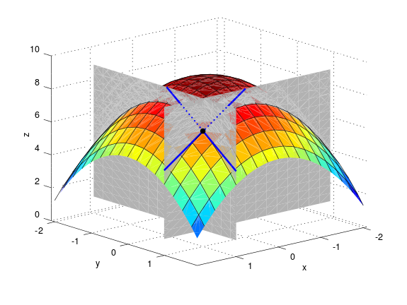

2. Hlutafleiður
“If you need help bark like a dog.“ - Gendry. „That’s stupid. If I need help I’ll shout help.“ - Arya”
- George R.R. Martin, A Clash of Kings
2.1. Graf falls
2.1.1. Skilgreining
Skilgreining
Látum \(f:{\mathbb R}^2\rightarrow {\mathbb R}\) vera fall. Graf fallsins er skilgreint sem mengið
Ef \(f:{\mathbb R}^3\rightarrow {\mathbb R}\) er fall, þá er graf fallsins skilgreint sem mengið
Graf fallsins \(f(x,y) = \sqrt{1-x^2-y^2}\), \(-0.5\leq x,y\leq 0.5\).
2.2. Jafnhæðarlínur
2.2.1. Skilgreining
Skilgreining
Látum \(f:{\mathbb R}^2\rightarrow {\mathbb R}\) vera fall. Ef \(c\) er fasti þá er mengið
kallað
jafnhæðarlína
en: contour line, depth contour, first principal line, height line, isobath, level curve
Smelltu fyrir ítarlegri þýðingu.
Smelltu fyrir ítarlegri þýðingu.

Nokkrar jafnhæðarlínur fallsins \(f(x,y) = \sqrt{1-x^2-y^2}\), \(-0.5\leq x,y\leq 0.5\).
Skilgreining
Látum \(f:{\mathbb R}^3\rightarrow {\mathbb R}\) vera fall. Ef \(c\) er fasti þá er mengið
kallað
jafnhæðarflötur
en: contour surface, level surface
Smelltu fyrir ítarlegri þýðingu.
2.3. Fjarlægð milli punkta
2.3.1. Skilgreining
Skilgreining
Fjarlægðin milli tveggja punkta \(\mbox{${\bf x}$}=(x_1,x_2, \ldots,x_n)\) og \(\mbox{${\bf y}$}=(y_1,y_2, \ldots,y_n)\) í \(\mbox{${\bf R}^n$}\) er skilgreind sem talan
2.4. Opnar kúlur
2.4.1. Skilgreining
Skilgreining
Látum \(P=(p_1,p_2,\ldots,p_n)\) vera punkt í \(\mbox{${\bf R}^n$}\). Skilgreinum opnu kúluna með miðju í \(P\) og geisla \(r\) sem mengið
Í \({\mathbb R}^2\) er eðlilegra að tala um opna skífu eða opinn disk í stað opinnar kúlu og í \({\mathbb R}\) þá er talað um opin bil.
2.5. Opin mengi
2.5.1. Skilgreining
Skilgreining
Látum \(U\) vera hlutmengi í \(\mbox{${\bf R}^n$}\).
Sagt er að \(U\) sé
opið mengi
en: open set, region
Smelltu fyrir ítarlegri þýðingu.
Mengið \(U\) er sagt
lokað
en: closed set
Smelltu fyrir ítarlegri þýðingu.
Smelltu fyrir ítarlegri þýðingu.
2.6. Jaðarpunktur
2.6.1. Skilgreining
Skilgreining
Látum \(U\) vera mengi í \(\mbox{${\bf R}^n$}\). Punktur
\(P\) í \(\mbox{${\bf R}^n$}\) er sagður
jaðarpunktur
en: boundary point, frontier point
Smelltu fyrir ítarlegri þýðingu.
2.7. Skilgreiningarmengi
2.7.1. Skilgreining
Skilgreining
Fyrir fall \(f(x_1,x_2,\ldots,x_n)\) þá táknar \({\cal D}(f)\)
skilgreiningarmengi
en: argument domain, domain, domain carrier, index set, latent domain, range of arguments, set of definition, source
Smelltu fyrir ítarlegri þýðingu.
2.8. Markgildi
2.8.1. Skilgreining
Skilgreining
Látum \(f(x_1,x_2,\ldots,x_n)\) vera fall af \(n\) breytistærðum með skilgreiningarmengi \({\cal D}(f)\subseteq \mbox{${\bf R}^n$}\). Látum \(P=(p_1,p_2,\ldots,p_n)\) vera punkt í \(\mbox{${\bf R}^n$}\) þannig að sérhver opin kúla um \(P\) inniheldur meira en einn punkt úr \({\cal D}(f)\).
Segjum að \(f(x_1,x_2,\ldots,x_n)\)
stefni á
en: converge to
Smelltu fyrir ítarlegri þýðingu.
Fyrir sérhverja tölu \(\epsilon>0\) er til tala \(\delta>0\) þannig að ef \((x_1,x_2,\ldots,x_n)\in{\cal D}(f)\) og
þá er
2.8.2. Ritháttur
Ef \(f(x_1,x_2,\ldots,x_n)\) stefnir á tölu \(L\) þegar \((x_1,x_2,\ldots,x_n)\) stefnir á \((p_1,p_2,\ldots,p_n)\) þá er ritað
og \(L\) kallast
markgildi
en: limit
Smelltu fyrir ítarlegri þýðingu.
Ef við skrifum \(\mathbf x = (x_1,x_2,\ldots,x_n)\) og \(\mathbf p = (p_1,p_2,\ldots,p_n)\) þá getum við skrifað þetta svona
2.8.3. Skilgreining (Skilgreining 2.8.1 sett fram fyrir föll af tveimur breytum.)
Skilgreining
Látum \(f(x,y)\) vera fall skilgreint á mengi \({\cal D}(f)\subseteq {\mathbb R}^2\). Látum \((a,b)\) vera punkt í \({\mathbb R}^2\) þannig að sérhver opin skífa um \((a,b)\) inniheldur meira en einn punkt úr \({\cal D}(f)\).
Segjum að \(f(x,y)\) stefni á tölu \(L\) þegar \((x,y)\) stefnir á \((a,b)\) ef eftirfarandi gildir:
Fyrir sérhverja tölu \(\epsilon>0\) er til tala \(\delta>0\) þannig að ef \((x,y)\in{\cal D}(f)\) og
þá er
2.9. Reglur um markgildi
2.9.1. Setning
Setning
Látum \(f\) og \(g\) vera föll af tveimur breytum. Gerum ráð fyrir að
og að sérhver
grennd
en: neighbourhood
Smelltu fyrir ítarlegri þýðingu.
(a) \(\lim_{(x,y)\rightarrow (a,b)}(f(x,y)\pm g(x,y))=L\pm M\).
(b) \(\lim_{(x,y)\rightarrow (a,b)}f(x,y) g(x,y)=LM\).
(c) \(\lim_{(x,y)\rightarrow (a,b)}\frac{f(x,y)}{g(x,y)}= \frac{L}{M}\), svo framarlega sem \(M\neq 0\).
(d) \(\lim_{(x,y)\rightarrow (a,b)}F(f(x,y))=F(L)\) ef \(F\) er fall af einni breytistærð sem er samfellt í punktinum \(L\).
2.10. Samfelldni
2.10.1. Skilgreining
Skilgreining
Látum \(f\) vera fall af \(n\) breytistærðum skilgreint á mengi \({\cal D}(f)\) í \(\mbox{${\bf R}^n$}\). Fallið \(f\) er sagt samfellt í punkti \((p_1,p_2,\ldots,p_n)\) í \({\cal D}(f)\) ef
Sagt er að fallið sé
samfellt
2.11. Hlutafleiður
2.11.1. Skilgreining
Skilgreining
Látum \(f(x,y)\) vera fall af tveimur breytum \(x\) og \(y\) sem er skilgreint á opinni skífu með miðju í punktinum \((a,b)\).
Skilgreinum
hlutafleiðu
og
hlutafleiðu
ef markgildin eru til.
Hlutafleiða m.t.t. \(x\) fyrir \(y=1\).
Hlutafleiða m.t.t. \(y\) fyrir \(x=1\).
2.11.2. Skilgreining
Skilgreining
Látum \(f(x,y,z)\) vera fall af þremur breytum \(x\), \(y\) og \(z\) sem er skilgreint á opinni kúlu með miðju í punktinum \((a, b,c)\).
Skilgreinum hlutafleiðu m.t.t. \(x\) í \((a,b,c)\) með
hlutafleiðu m.t.t. \(y\) í \((a,b,c)\) með
og hlutafleiðu m.t.t. \(z\) í \((a,b,c)\) með
ef markgildin eru til.
2.11.3. Skilgreining
Skilgreining
Látum \(f\) vera fall af \(n\) breytum \(x_1,x_2,\ldots,x_n\) sem er skilgreint á opinni kúlu um punktinn \(\mathbf{a}=(a_1, a_2, \ldots, a_n).\)
Hlutafleiða \(f\) með tilliti til breytunnar \(x_k\) í punktinum \(\mathbf{a}\) er skilgreind sem markgildið
ef markgildið er til. (Hér stendur \(\mbox{${\bf e}$}_k\) fyrir vigurinn sem er með 0 í öllum hnitum nema því \(k\)-ta þar sem er 1.)
2.11.4. Ritháttur
Ritum \(z=f(x,y)\). Ýmis konar ritháttur er fyrir hlutafleiður, m.a.
Þegar við viljum tákna gildið á hlutafleiðu \(f\) í ákveðnum punkti \((x,y)=(a,b)\) þá eru líka ýmsir möguleikar, til dæmis
Aðvörun
Strangt til tekið merkir rithátturinn \(\frac{\partial}{\partial x} f(a,b)\) að við stingum fyrst inn tölunum \(a\) og \(b\) og diffrum síðan með tilliti til \(x\). En þar sem \(f(a,b)\) er óháð \(x\) er útkoman 0.
2.12. Snertiplan
Látum \(f(x,y)\) vera fall af tveimur breytistærðum þannig að hlutafleiðurnar \(f_1(a,b)\) og \(f_2(a,b)\) séu skilgreindar.
{kind=link}
Í punktinum \((a,b,f(a,b))\) er
\(\mbox{${\bf T}$}_1 = \mbox{${\bf i}$}+ f_1(a,b)\mbox{${\bf k}$}\qquad\)
snertivigur
en: tangent vector
Smelltu fyrir ítarlegri þýðingu.
\(\mbox{${\bf T}$}_2 = \mbox{${\bf j}$}+ f_2(a,b)\mbox{${\bf k}$}\qquad\)
snertivigur
en: tangent vector
Smelltu fyrir ítarlegri þýðingu.
Táknum með \(S\) planið sem hefur stikunina
Vigurinn
er þvervigur á \(S\) og jafna plansins \(S\) er
Þverlína
en: normal, normal line, perpendicular
Smelltu fyrir ítarlegri þýðingu.
Ef \(f(x,y)\) er ’nógu nálægt’ (skilgreint nánar síðar) planinu
\(S\) þegar \((x,y)\) er nálægt punktinum \((a,b)\) þá
kallast \(S\)
snertiplan
en: tangent plane
Smelltu fyrir ítarlegri þýðingu.
2.13. Hlutafleiður af hærra stigi
2.13.1. Skilgreining
Skilgreining
Ritum \(z=f(x,y)\). Annars stigs hlutafleiður \(f\) eru skilgreindar með formúlunum
Hlutafleiðurnar \(f_{11}(x,y)\) og \(f_{22}(x,y)\) kallast hreinar hlutafleiður og \(f_{12}(x,y)\) og \(f_{21}(x,y)\) kallast blandaðar hlutafleiður.
2.13.2. Setning
Setning
Látum \(f(x,y)\) vera fall sem er skilgreint á opinni skífu \(D\) með miðju í \(P=(a,b)\) . Gerum ráð fyrir að hlutafleiðurnar \(f_1(x,y)\), \(f_2(x,y)\), \(f_{12}(x,y)\) og \(f_{21}(x,y)\) séu allar skilgreindar á \(D\) og að þær séu allar samfelldar á \(D\). Þá gildir að
2.13.3. Hugmynd að skilgreiningu
Skilgreiningu 5.6 má útvíkka á augljósan hátt til að skilgreina 2. stigs hlutafleiður fyrir föll af fleiri en tveimur breytum. Einnig er augljóst hvernig má skilgreina hlutafleiður af hærri stigum en 2, til dæmis ef \(w=f(x,y,z)\) þá
og
2.13.4. Setning (Almenn útgáfa af Setningu 2.13.2)
Setning
Látum \(f\) vera fall \(n\) breytistærðum sem er skilgreint á opinni kúlu með miðju í \(P=(x_1, x_2,\ldots, x_n)\).
Skoðum tvær hlutafleiður \(f\) í punktum \(P\) þar sem er diffrað með tilliti til sömu breytistærða og jafn oft með tilliti til hverrar breytistærðar. Ef þessar hlutafleiður eru samfelldar í punktinum \(P\) og allar hlutafleiður af lægra stigi eru skilgreindar á \(D\) og samfelldar á \(D\) þá eru hlutafleiðurnar sem við erum að skoða jafnar í \(P\).
2.13.5. Dæmi:
Dæmi
Ef \(w = f(x,y,z)\) er fall af þremur breytistærðum þá er t.d.
ef skilyrðin í setningunni eru uppfyllt.
2.14. Keðjuregla
2.14.1. Setning (Keðjureglan í einni breytistærð.)
Setning
Við munum nú skoða nokkrar útgáfur af
keðjureglu
en: chain rule
Smelltu fyrir ítarlegri þýðingu.
2.14.2. Setning
Setning
Látum \(f(x,y)\) vera fall þar sem \(x=x(t)\) og \(y=y(t)\) eru föll af breytu \(t\). Gerum ráð fyrir að á opinni skífu um punktinum \((x(t),y(t))\) séu báðar fyrsta stigs hlutafleiður \(f\) skilgreindar og samfelldar. Gerum enn fremur ráð fyrir að föllin \(x(t)\) og \(y(t)\) séu bæði diffranleg í punktinum \(t\). Þá er fallið
diffranlegt í \(t\) og
2.14.3. Ritháttur
Ritum \(z=f(x,y)\) þar sem \(x=x(t)\) og \(y=y(t)\) eru föll af breytu \(t\). Þá er

2.14.4. Setning
Setning
Látum \(f(x,y)\) vera fall af breytistærðum \(x\) og \(y\) sem aftur eru föll af breytum \(s\) og \(t\), það er að segja \(x=x(s,t)\) og \(y=y(s,t)\). Ritum svo
Þá gildir (að gefnum sambærilegum skilyrðum og í 2.14.2) að
og
2.14.5. Ritháttur
Ritum \(z=f(x,y)\) þar sem \(x=x(s,t)\) og \(y=y(s,t)\) eru föll af breytum \(s\) og \(t\). Þá er

2.14.6. Ritháttur
Ritum \(z=f(x,y)\) þar sem \(x=x(s,t)\) og \(y=y(s,t)\) eru föll af breytum \(s\) og \(t\). Þá er
2.14.7. Setning
Setning
Látum \(u\) vera fall af \(n\) breytum \(x_1, x_2, \ldots, x_n\) þannig að hvert \(x_i\) má rita sem fall af \(m\) breytum \(t_1, t_2, \ldots, t_m\). Gerum ráð fyrir að allar hlutafleiðurnar \(\frac{\partial u}{\partial x_i}\) og \(\frac{\partial x_i}{\partial t_j}\) séu til og samfelldar. Þegar \(u\) er skoðað sem fall af breytunum \(t_1, t_2, \ldots, t_m\) fæst að

2.14.8. Dæmi
Dæmi
Látum \(T\) vera fall af \(x\), \(y\) og \(t\), og látum enn fremur \(x\) og \(y\) vera föll af \(t\). Finnum \(\frac{ dT}{dt}\).
Lausn

Sjáum á myndinni að:
2.14.9. Dæmi
Dæmi
Látum \(T\) vera fall af \(x\), \(y\) og \(s\) og látum enn fremur \(t\), \(x\) og \(y\) vera föll af \(s\) og \(t\). Finnum \(\frac{ \partial T}{\partial t}\).
Lausn

Sjáum á myndinni að:
2.14.10. Dæmi
Dæmi
Látum \(z\) vera fall af \(u\), \(v\) og \(r\). Látum \(u\) og \(v\) vera föll af \(x\), \(y\) og \(r\). Látum \(r\) vera fall af \(x\) og \(y\). Finnum \(\frac{\partial z}{\partial x}\).
Lausn

Sjáum á myndinni að:
2.15. Diffranleiki í einni breytistærð
2.15.1. Skilgreining
Skilgreining
Látum \(f\) vera fall af einni breytistærð og gerum ráð fyrir að
\(f\) sé skilgreint á opnu bili sem inniheldur punktinn \(a\).
Fallið \(f\) er sagt vera
diffranlegt
en: differentiable
Smelltu fyrir ítarlegri þýðingu.
er til.
2.16. Diffranleiki í einni breytistærð - önnur lýsing
2.16.1. Skilgreining
Skilgreining
Látum \(f\) vera fall af einni breytistærð og gerum ráð fyrir að
\(f\) sé skilgreint á opnu bili sem inniheldur punktinn \(a\).
Fallið \(f\) er sagt vera
diffranlegt
en: differentiable
Smelltu fyrir ítarlegri þýðingu.
(Talan \(m\) verður að vera jöfn \(f'(a)\).)
Fallið \(f\) er ’nálægt’ línunni \(L\) nálægt punktinum \(a\).
2.17. Diffranleiki
2.17.1. Skilgreining
Skilgreining
Fall \(f(x,y)\) sem er skilgreint á opinni skífu umhverfis
\((a,b)\) er sagt vera
diffranlegt
en: differentiable
Smelltu fyrir ítarlegri þýðingu.
þar sem \(S(x,y) = f(a,b) + f_1(a,b)(x-a)+f_2(a,b)(y-b)\).
Fallið \(f\) er ’nálægt’ sléttunni \(S\) nálægt punktinum \((a,b)\).
2.18. Snertiplan
Ef \(f\) er diffranlegt í \((a,b)\) þá kallast planið \(S\)
snertiplan
en: tangent plane
Smelltu fyrir ítarlegri þýðingu.
\(S(x,y) = f(a,b) + f_1(a,b)(x-a)+f_2(a,b)(y-b)\).
2.19. Diffranleiki
2.19.1. Setning (Meðalgildissetningin)
Setning
Gerum ráð fyrir að fallið \(f\) sé samfellt á lokaða bilinu \([a,b]\) og diffranlegt á opna bilinu \((a,b)\). Þá er til punktur \(c\) á opna bilinu \((a,b)\) þannig að
2.19.2. Setning
Setning
Látum \(f(x,y)\) vera fall sem er skilgreint á opinni skífu \(\cal D\) með miðju í \((a,b)\) þannig að á þessari skífu eru báðar fyrsta stigs hlutafleiður \(f\) skilgreindar og samfelldar. Gerum ráð fyrir að \(h\) og \(k\) séu tölur þannig að \((x+h, y+k)\in{\cal D}\). Þá eru til tölur \(\theta_1\) og \(\theta_2\) á milli 0 og 1 þannig að
2.19.3. Setning
Setning
Látum \(f(x,y)\) vera fall sem er skilgreint á opinni skífu \(\cal D\) með miðju í \((a,b)\) þannig að á þessari skífu eru báðar fyrsta stigs hlutafleiður \(f\) skilgreindar og samfelldar. Þá er fallið \(f\) diffranlegt í \((a,b)\).
2.19.4. Setning
Setning
Gerum ráð fyrir að \(f(x,y)\) sé fall sem er diffranlegt í punktinum \((a,b)\). Þá er \(f\) samfellt í \((a,b)\).
2.19.5. Keðjuregla
Setning
Ritum \(z=f(x,y)\) þar sem \(x=x(s,t)\) og \(y=y(s,t)\). Gerum ráð fyrir að
\(x(a,b)=p\) og \(y(a,b)=q\);
fyrsta stigs hlutafleiður \(x(s,t)\) og \(y(s,t)\) eru skilgreindar í punktinum \((a,b)\);
fallið \(f\) er diffranlegt í punktinum \((p,q)\).
Þá eru fyrsta stigs hlutafleiður \(z\) með tilliti til breytanna \(s\) og \(t\) skilgreindar í punktinum \((a,b)\) og um þær gildir að
og
2.20. Diffur
2.20.1. Skilgreining
Skilgreining
Ritum \(z=f(x_1, x_2, \ldots, x_n)\).
Diffrið
en: differential
Smelltu fyrir ítarlegri þýðingu.
Diffrið er nálgun á
2.21. Varpanir \(\mbox{${\bf R}^n$}\rightarrow\mbox{${\bf R}^m$}\)
2.21.1. Táknmál
Látum \(\mbox{${\bf f}$}:\mbox{${\bf R}^n$}\rightarrow\mbox{${\bf R}^m$}\) tákna vörpun. Ritum \(\mbox{${\bf f}$}=(f_1,\ldots,f_m)\) þar sem hvert \(f_i\) er fall \(\mbox{${\bf R}^n$}\rightarrow{\mathbb R}\). Fyrir punkt í \(\mbox{${\bf R}^n$}\) ritum við \(\mbox{${\bf x}$}=(x_1,x_2,\ldots,x_n)\). Síðan ritum við \(\mbox{${\bf y}$}=\mbox{${\bf f}$}(\mbox{${\bf x}$})\) þar sem \(\mbox{${\bf y}$}=(y_1,y_2,\ldots,y_m)\) og \(\mathbf f(\mathbf x) = (f_1(x_1,\ldots,x_n),\ldots,f_m(x_1,\ldots,x_n))\).
2.22. Jacobi-fylki
2.22.1. Skilgreining
Skilgreining
Notum táknmálið úr 2.22.1. Ef allar hlutafleiðurnar \(\partial y_i/\partial x_j\) eru skilgreindar í punktinum \(\mbox{${\bf x}$}\) þá skilgreinum við Jacobi-fylki \(f\) í punktinum \(\mbox{${\bf x}$}\) sem \(m\times n\) fylkið
2.23. Diffranleiki varpana \(\mbox{${\bf R}^n$}\rightarrow\mbox{${\bf R}^m$}\)
2.23.1. Skilgreining
Skilgreining
Notum táknmálið úr 2.22.1 og 2.23.1. Látum \(\mbox{${\bf a}$}=(a_1, a_2, \ldots, a_n)\) vera fastan punkt í \(\mbox{${\bf R}^n$}\) og ritum \(\mbox{${\bf h}$}=(h_1,h_2,\ldots,h_n)\). Vörpunin \(\mbox{${\bf f}$}\) er sögð diffranleg í punktinum \(\mbox{${\bf a}$}\) ef
Vörpunin \(f\) er ’nálægt’ línulegu vörpuninni \(D\mbox{${\bf f}$}\) nálægt punktinum \(\mbox{${\bf a}$}\).
Línulega vörpunin \(D\mbox{${\bf f}$}\) kallast afleiða \(\mbox{${\bf f}$}\).
2.24. Keðjuregla
2.24.1. Setning
Setning
Látum \(\mbox{${\bf f}$}:\mbox{${\bf R}^n$}\rightarrow \mbox{${\bf R}^m$}\) og \(\mbox{${\bf g}$}:\mbox{${\bf R}^m$}\rightarrow \mbox{${\bf R}^k$}\) vera varpanir. Gerum ráð fyrir að vörpunin \(\mbox{${\bf f}$}\) sé diffranleg í punkti \(\mbox{${\bf x}$}\) og vörpunin \(\mbox{${\bf g}$}\) sé diffranleg í punktinum \(\mbox{${\bf y}$}=\mbox{${\bf f}$}(\mbox{${\bf x}$})\). Þá er samskeytta vörpunin \(\mbox{${\bf g}$}\circ\mbox{${\bf f}$}:\mbox{${\bf R}^n$}\rightarrow\mbox{${\bf R}^k$}\) diffranleg í \(\mbox{${\bf x}$}\) og
2.25. Stigull
2.25.1. Skilgreining
Skilgreining
Látum \(f(x,y)\) vera fall og \((x,y)\) punkt þar sem báðar
fyrsta stigs hlutafleiður \(f\) eru skilgreindar. Skilgreinum
stigul
en: gradient
Smelltu fyrir ítarlegri þýðingu.
Stigull
en: gradient
Smelltu fyrir ítarlegri þýðingu.
2.25.2. Ritháttur
Oft hentugt að rita
Þá er litið svo á að \(\nabla\) sé
diffurvirki
en: differential operator
Smelltu fyrir ítarlegri þýðingu.
2.25.3. Dæmi

Graf \(z=1-x^2-y^2\)

Jafnhæðarlínur \(z=1-x^2-y^2\). Stigull og snertilína við jafnhæðarlínuna \(z=0.5\) í \((x,y) = (0.5,0.5)\).
2.25.4. Setning
Setning
Gerum ráð fyrir að fallið \(f(x,y)\) sé diffranlegt í punktinum \((a,b)\) og að \(\nabla f(a,b) \neq \mathbf{0}\). Þá er vigurinn \(\nabla f(a,b)\) hornréttur á þá jafnhæðarlínu \(f\) sem liggur í gegnum punktinn \((a,b)\).
2.26. Snertilína við jafnhæðarferil
2.26.1. Setning
Setning
Gerum ráð fyrir að fallið \(f(x,y)\) sé diffranlegt í punktinum
\((a,b)\) og að \(\nabla f(a,b) \neq \mathbf{0}\). Jafna
snertilínu
en: tangent, tangent line
Smelltu fyrir ítarlegri þýðingu.
Smelltu fyrir ítarlegri þýðingu.
eða
2.27. Stefnuafleiða
2.27.1. Skilgreining
Skilgreining
Látum \(\mbox{${\bf u}$}=u\mbox{${\bf i}$}+v\mbox{${\bf j}$}\) vera
einingarvigur.
Stefnuafleiða
ef markgildið er skilgreint.
Aðvörun
Í skilgreiningunni á stefnuafleiðu er tekið einhliða markgildi. Berið það saman við skilgreiningu á hlutafleiðu þar sem markgildið er tvíhliða.
2.27.2. Setning
Setning
Gerum ráð fyrir að fallið \(f\) sé diffranlegt í \((a,b)\) og \(\mbox{${\bf u}$}=u\mbox{${\bf i}$}+v\mbox{${\bf j}$}\) sé einingarvigur. Þá er stefnuafleiðan í punktinum \((a,b)\) í stefnu \(\mbox{${\bf u}$}\) skilgreind og gefin með formúlunni
2.27.3. Setning
Setning
Látum \(f\) vera gefið fall og gerum ráð fyrir að \(f\) sé diffranlegt í punktinum \((a,b)\).
(a) Hæsta gildið á stefnuafleiðunni \(D_{\mbox{${\bf u}$}}f(a,b)\) fæst þegar \(\mbox{${\bf u}$}\) er einingarvigur í stefnu \(\nabla f(a,b)\), þ.e.a.s. \(\mbox{${\bf u}$}=\frac{\nabla f(a,b)}{|\nabla f(a,b)|}\).
(b) Lægsta gildið á stefnuafleiðunni \(D_{\mbox{${\bf u}$}}f(a,b)\) fæst þegar \(\mbox{${\bf u}$}\) er einingarvigur í stefnu \(-\nabla f(a,b)\), þ.e.a.s. \(\mbox{${\bf u}$}=-\frac{\nabla f(a,b)}{|\nabla f(a,b)|}\).
(c) Ef \(\cal C\) er sú hæðarlína \(f\) sem liggur í gegnum \((a,b)\) og \(\mbox{${\bf u}$}\) er einingarsnertivigur við \(\cal C\) í punktinum \((a,b)\) þá er \(D_{\mbox{${\bf u}$}}f(a,b)=0\).

2.27.4. Setning
Setning
Látum \(f\) vera gefið fall og gerum ráð fyrir að \(f\) sé diffranlegt í punktinum \((a,b)\).
(a) Í punktinum \((a,b)\) þá vex \(f\) hraðast ef haldið er í stefnu \(\nabla f(a,b)\).
(b) Í punktinum \((a,b)\) þá minnkar \(f\) hraðast ef haldið er í stefnu \(-\nabla f(a,b)\).
(c) Ef \(\cal C\) er sú hæðarlína \(f\) sem liggur í gegnum \((a,b)\) og \(\mbox{${\bf u}$}\) er einingarsnertivigur við \(\cal C\) í punktinum \((a,b)\) þá er er vaxtarhraði \(f\) í stefnu \(\mbox{${\bf u}$}\) jafn 0.
2.28. Stigull (aftur)
2.28.1. Skilgreining
Skilgreining
Látum \(f\) vera fall af þremur breytistærðum, þannig að allar þrjár
fyrsta stigs hlutafleiður \(f\) í punktinum \((x,y,z)\) séu
skilgreindar.
Stigull
en: gradient
Smelltu fyrir ítarlegri þýðingu.
2.29. Snertiplan við jafnhæðarflöt
2.29.1. Setning
Setning
Látum \(f\) vera fall af þremur breytistærðum þannig að fallið
\(f\) er diffranlegt í punktinum \((a,b,c)\). Látum
\(\cal F\) tákna þann
jafnhæðarflöt
en: contour surface, level surface
Smelltu fyrir ítarlegri þýðingu.
Smelltu fyrir ítarlegri þýðingu.
eða með umritun
2.30. Fólgin föll og Taylor-nálganir
2.30.1. Upprifjun
Skoðum feril sem gefinn er með jöfnu \(F(x,y)=0\) og gerum ráð fyrir að báðar fyrsta stigs hlutafleiður \(F\) séu samfelldar. Látum \((x_0,y_0)\) vera punkt á ferlinum. Ef \(F_2(x_0,y_0)\neq 0\) þá má skoða \(y\) sem fall af \(x\) í grennd við punktinn \((x_0,y_0)\) og fallið \(y=y(x)\) er diffranlegt í punktinum \(x_0\) og afleiðan er gefin með formúlunni
Sagt að jafnan \(F(x,y)=0\) skilgreini \(y\) sem
fólgið fall
en: implicit function
Smelltu fyrir ítarlegri þýðingu.
2.30.2. Setning
Setning
Látum \(F\) vera fall af \(n\)-breytum \(x_1, \ldots, x_n\) og gerum ráð fyrir að allar fyrsta stigs hlutafleiður \(F\) séu samfelldar. Látum \((a_1,\ldots,a_n)\) vera punkt þannig að \(F(a_1,\ldots,a_n)=0\). Ef \(F_n(a_1,\ldots,a_n)\neq 0\) þá er til samfellt diffranlegt fall \(\varphi(x_1, \ldots, x_{n-1})\) skilgreint á opinni kúlu \(B\) utan um \((a_1,\ldots,a_{n-1})\) þannig að
og
fyrir alla punkta \((x_1, \ldots, x_{n-1})\) í \(B\).
Ennfremur gildir að
2.30.3. Skilgreining
Skilgreining
Jacobi-ákveða
Ef \(F\) og \(G\) eru föll af breytum \(x,y,z,\ldots\) þá skilgreinum við, til dæmis,
Ef við höfum föll \(F, G, H\) af breytum \(x,y,z,w,\ldots\) þá skilgreinum við, til dæmis,
2.30.4. Setning (Upprifjun á reglu Cramers.)
Setning
Látum \(A\) vera andhverfanlegt \(n\times n\) fylki og \(\mbox{${\bf b}$}\) vigur í \(\mbox{${\bf R}^n$}\). Gerum ráð fyrir að \(\mbox{${\bf x}$}=(x_1, x_2, \ldots, x_n)\) sé lausn á \(A\mbox{${\bf x}$}=\mbox{${\bf b}$}\). Skilgreinum \(B_i\) sem \(n\times n\) fylkið sem fæst með því að setja vigurinn \(\mbox{${\bf b}$}\) í staðinn fyrir dálk \(i\) í \(A\). Þá er
2.30.5. Setning (
Setningin um fólgin föll
en: implicit function theorem
Smelltu fyrir ítarlegri þýðingu.
Smelltu fyrir ítarlegri þýðingu.
Setning
Skoðum jöfnuhneppi
Látum \(P_0=(a_1,\ldots, a_m, b_1,\ldots, b_n)\) vera punkt sem uppfyllir jöfnurnar. Gerum ráð fyrir að allar fyrsta stigs hlutafleiður fallanna \(F_{(1)},\ldots, F_{(n)}\) séu samfelldar á opinni kúlu umhverfis \(P_0\) og að
fyrir alla punkta \((x_1,\ldots,x_m)\) í \(B\). Enn fremur fæst að
2.30.6. Setning (Setningin um staðbundna andhverfu)
Setning
vera vörpun af \(n\) breytistærðum sem tekur gildi í \(\mbox{${\bf R}^n$}\) og er skilgreind á opnu mengi í \(\mbox{${\bf R}^n$}\). Gerum ráð fyrir að allar fyrsta stigs hlutafleiður fallanna \(f_1, \ldots, f_n\) séu samfelld föll. Ef Jacobi-fylkið \(D\mbox{${\bf f}$}(\mbox{${\bf x}$}_0)\) er andhverfanlegt í punkti \(\mbox{${\bf x}$}_0\) á skilgreiningarsvæði \(\mbox{${\bf f}$}\) þá er til opin kúla \(B_{\mbox{${\bf x}$}}\) utan um \(\mbox{${\bf x}$}_0\) og opin kúla \(B_{\mbox{${\bf y}$}}\) utan um \(\mbox{${\bf y}$}_0=f(\mbox{${\bf x}$}_0)\) og vörpun | \(\mbox{${\bf g}$}:B_{\mbox{${\bf y}$}}\rightarrow B_{\mbox{${\bf x}$}}\) þannig að \(\mbox{${\bf g}$}(\mbox{${\bf f}$}(\mbox{${\bf x}$}))=\mbox{${\bf x}$}\) fyrir alla punkta \(\mbox{${\bf x}$}\in B_{\mbox{${\bf x}$}}\) og \(\mbox{${\bf f}$}(\mbox{${\bf g}$}(\mbox{${\bf y}$}))=\mbox{${\bf y}$}\) fyrir alla punkta \(\mbox{${\bf y}$}\in B_{\mbox{${\bf y}$}}\).
2.30.7. Upprifjun (Taylor-regla í einni breytistærð.)
Látum \(f\) vera \(n+1\)-diffranlegt fall af einni breytistærð. Margliðan
kallast \(n\)-ta stigs Taylor-margliða \(f\) með miðju í \(a\). Til er punktur \(s\) á milli \(a\) og \(x\) þannig að
Fáum svo að
sem er kallað \(n\)-ta stigs Taylor-formúla.
2.30.8. Skilgreining
Skilgreining
Látum \(f(x,y)\) vera fall þannig að fyrsta stigs hlutafleiður \(f\) eru skilgreindar og samfelldar. Margliðan
kallast fyrsta stigs Taylor-margliða \(f\) með miðju í \((a,b)\).
2.30.9. Skilgreining
Skilgreining
Látum \(f(x,y)\) vera fall þannig að fyrsta og annars stigs hlutafleiður \(f\) eru skilgreindar og samfelldar. Margliðan
kallast annars stigs Taylor-margliða \(f\) með miðju í \((a,b)\).
2.30.10. Skilgreining og athugasemd
Setning
Skilgreinum tvo
diffurvirkja
en: differential operator
Smelltu fyrir ítarlegri þýðingu.
Athugasemd
Athugið að ef hlutafleiður \(f\) af nógu háum stigum eru allar skilgreindar og samfelldar þá er \(D_1D_2=D_2D_1\), þ.e.a.s. ekki skiptir máli í hvaða röð er diffrað, bara hve oft er diffrað með tilliti til hvorrar breytu.
2.30.11. Upprifjun (
Tvíliðuregla
en: binomial theorem
Smelltu fyrir ítarlegri þýðingu.
Smelltu fyrir ítarlegri þýðingu.
Skilgreining
Skilgreinum \({n\choose j}\) (lesið n yfir j) með:
Talan \({n\choose j}\) er \(j+1\)-sta talan í \(n+1\)-stu línu Pascals-þríhyrningsins. Höfum að
2.30.12. Regla
Setning
Ef \(f(x,y)\) er fall þannig að allar hlutafleiður af \(n\)-ta og lægri stigum eru samfelldar þá gildir að
2.30.13. Skilgreining
Skilgreining
Fyrir fall \(f(x,y)\) þannig að allar hlutafleiður af \(n\)-ta og lægri stigum eru samfelldar þá er \(n\)-ta stigs Taylor-margliða \(f\) með miðju í punktinum \((a,b)\) skilgreind sem margliðan
2.30.14. Setning
Setning
Fyrir fall \(f(x,y)\) þannig að allar hlutafleiður af \(n+1\)-ta og lægri stigum eru samfelldar þá gildir um skekkjuna í \(n\)-ta stigs Taylor-nálgun að til er tala \(\theta\) á milli 0 og 1 þannig að ef \(h=x-a\) og \(k=y-b\) þá er